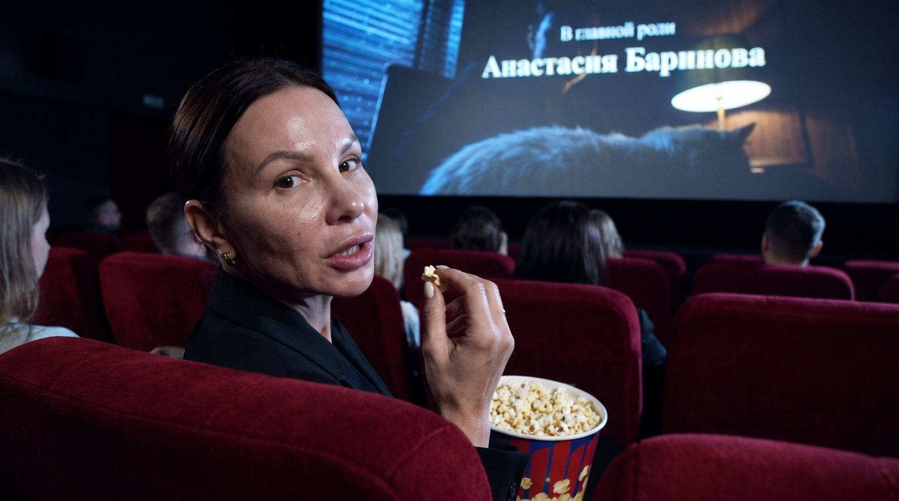
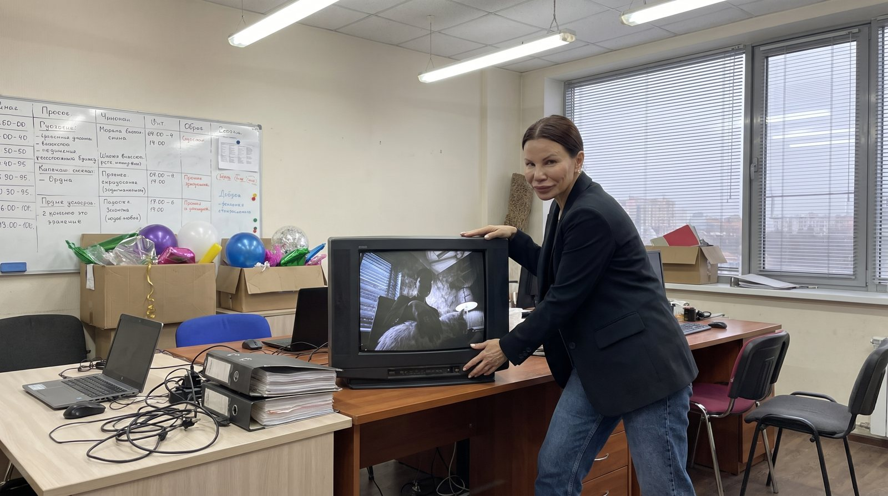
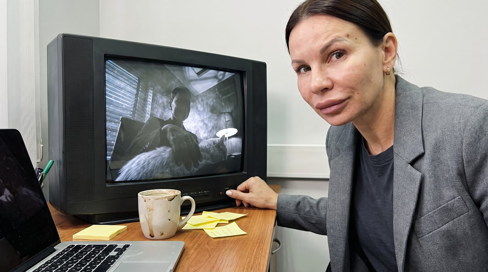

Концовка: 2 направления
А. Кинотеатр (я за него)
 Шаг 1: титры старого фильма идут на экране кинотеатра, камера отъезжает. В зале одна Настя с попкорном, она поворачивается к нам
Шаг 1: титры старого фильма идут на экране кинотеатра, камера отъезжает. В зале одна Настя с попкорном, она поворачивается к нам
Шаг 2: крупно: «Так было раньше. А сейчас у нас есть платформа „Человеки“»Б. Телевизор в живом офисе

Телевизор, общий план: живой офис агентства, Настя отодвигает телевизор
Телевизор, ближе: рука на телевизоре, она сейчас его выключит